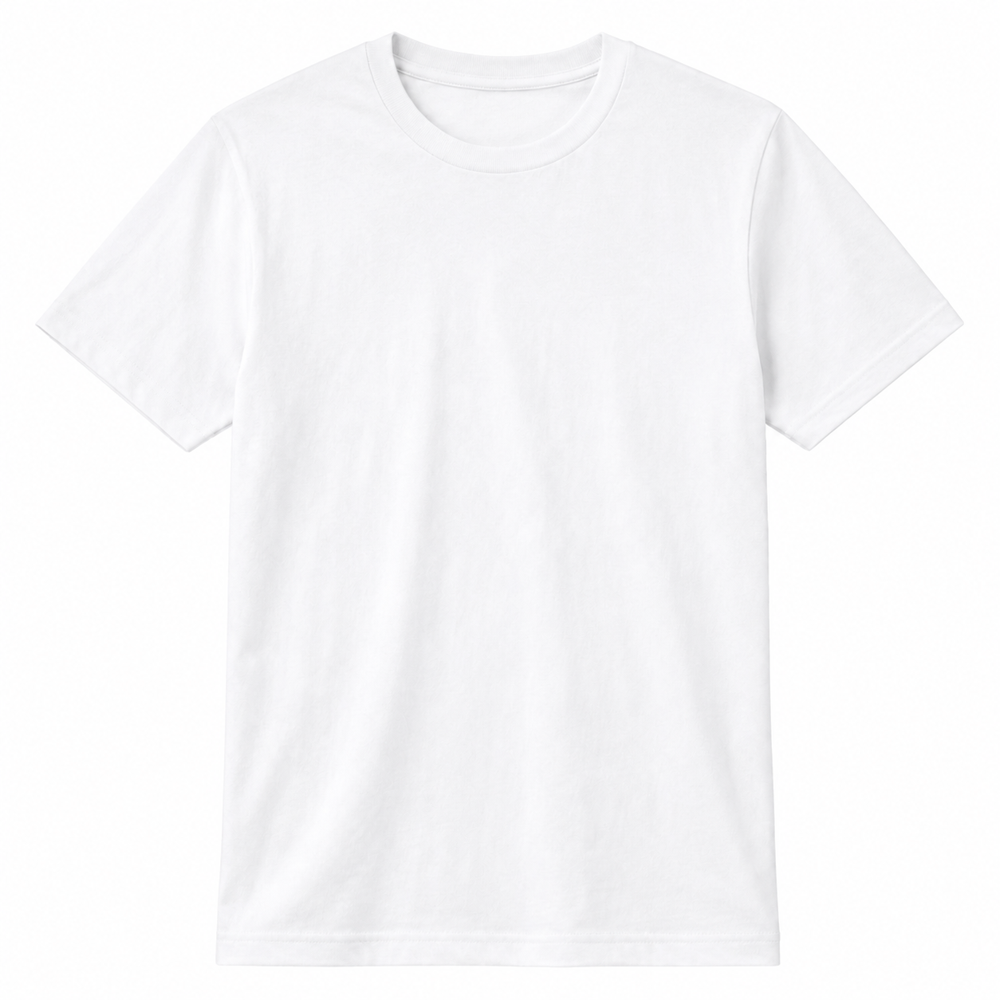

GS1 Türkiye demo arayüzü
Sürdürülebilir Pamuklu Tişört için Dijital Ürün Pasaportu
Bu sayfa, GS1 standartlarının Dijital Ürün Pasaportu senaryosunda nasıl kullanılabileceğini göstermek amacıyla hazırlanmış bir demo arayüzdür. Buradaki ürün, şirket ve belge bilgileri temsili olarak oluşturulmuştur.

Ürün Özeti
Sürdürülebilir Pamuklu Tişört
DPP Erişim Bilgisi
GS1 Digital Link URI
Bu bağlantı, ürünün GS1 tanımlayıcıları kullanılarak dijital ürün pasaportuna bağlanmasını temsil eder.
GS1 Digital Link
https://www.gs1tr.org/01/8698528500038/10/LOT-2026-TR-001/21/89666
GS1 Digital LinkAI (01)AI (10)AI (21)
GTIN
AI (01)
GTIN
Parti / Lot
AI (10)
Lot
Seri Numarası
AI (21)
Seri
Ürün Kimliği
GTIN8698528500038GTIN
Ürün adıSürdürülebilir Pamuklu Tişört
MarkaDemo Marka
ModeldefaultProduct
Seri numarası89666AI (21)
Parti / LotLOT-2026-TR-001AI (10)
Ürün kategorisiTekstil / Giyim
Ekonomik Operatör Bilgileri
Üretici adıDemo Tekstil Sanayi A.Ş.Ekonomik operatör
Üretici GLN8698528500014GLN
İthalatçı / yetkili temsilciDemo Marka Türkiye
İletişim ülkesiTürkiye
Web sitesihttps://www.gs1tr.org
Üretim ve Tedarik Zinciri
Üretim tesisiDemo Üretim Tesisi
Tesis GLN8698528500021GLN
Üretim ülkesiTürkiye
Üretim tarihi15 Ocak 2026
Tedarikçi referansıSUP-TR-COTTON-2048
Malzeme Bilgileri
Ana malzeme%92 organik pamuk, %8 elastan
Geri dönüştürülmüş içerik oranı%18
Tehlikeli madde beyanıBeyan edilen tehlikeli madde yok
Boya / kimyasal işlem bilgisiDüşük su tüketimli reaktif boya
Sürdürülebilirlik Bilgileri
Karbon ayak izi4,8 kg CO₂e
Su tüketimi1.240 litre
Enerji tüketimi2,7 kWh
Dayanıklılık bilgisi50 yıkama çevrimi
Çevresel uygunluk beyanıDemo çevresel beyan kaydı
Onarım ve Kullanım
Bakım talimatları30°C hassas yıkama, düşük ısıda ütü
Onarım talimatlarıDikiş ve yama onarımı desteklenir
Yedek parça bulunabilirliğiEtiket ve düğme seti 3 yıl
Kullanım ömrü beklentisi5 yıl
Geri Dönüşüm ve Bertaraf
Geri dönüşüm talimatıTekstil toplama noktalarına teslim edin
Ayrıştırma bilgisiEtiket ve aksesuarlar ayrı işlenebilir
Ambalaj geri dönüşüm bilgisiKarton ambalaj geri dönüştürülebilir
Bertaraf uyarılarıEvsel atıkla karıştırmayın
Uygunluk ve Belgeler
Uygunluk beyanıDemo uygunluk beyanı
SertifikalarTR-DEMO-TEX-2026-001
Test raporlarıTR-LAB-2026-4459
Yetkili kurum bağlantılarıDemo kurum kayıt bağlantısı
EPCIS - Olay Verileri
Ürün Geçmişi
15 Ocak 2026, 09:30
Demo Üretim Tesisi, İstanbul
16 Ocak 2026, 10:15
Demo Kalite Laboratuvarı, İstanbul
18 Ocak 2026, 14:10
Demo Lojistik Merkezi, Kocaeli
22 Ocak 2026, 17:40
Demo Mağaza, Ankara
12 Mayıs 2027, 11:45
Yetkili Servis Noktası, Ankara
20 Eylül 2029, 16:20
Demo Geri Dönüşüm Tesisi, İzmir
- Olay tipi
- Geri Dönüşüm
- GLN
- 8698528500045 GLN / SGLN
- İş adımı
- recycling
- Durum
- recycled
- İlgili ürün
- 8698528500038 / LOT-2026-TR-001 / 89666 Digital Link